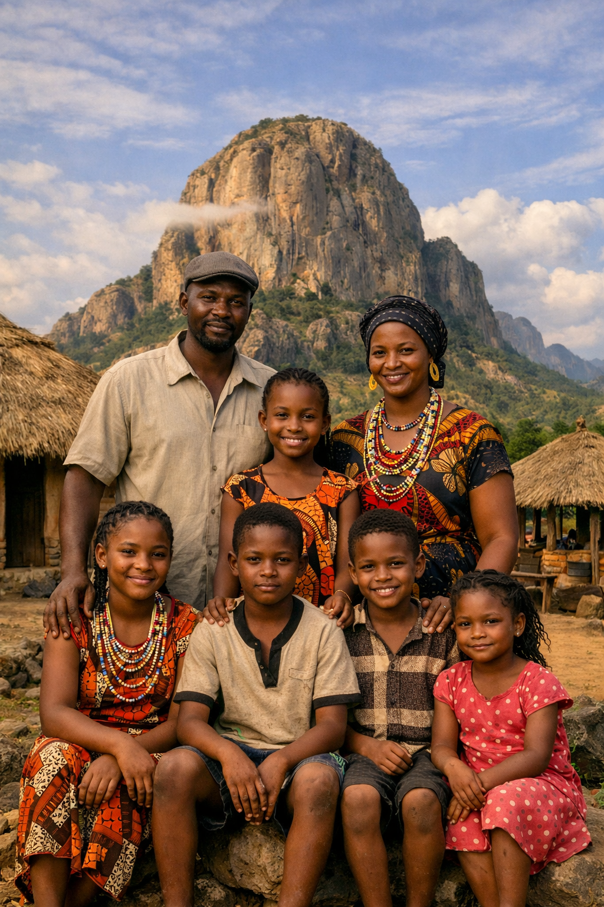
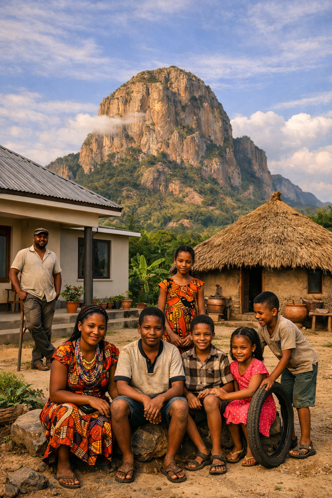

Three generations of Akols, rooted in the red soils of Teso, shaped by community, faith, and the ancient land of Nyero Subcounty.

Akol Family PortraitAdd family photo
Akol HomesteadAdd homestead photo"Wherever we go, Kumi is where we come back to."
— Mzee Kelment Akol, Family ElderThe Akol family has called the Kumi area home for over three generations. Our roots go deep into the Teso sub-region - into its red-laterite soils, its millet fields, its granite outcrops, and its ancient spiritual landscape. We are Iteso by heritage, Christian by faith, and Ugandan by destiny.
Our homestead in Nyero Subcounty sits in the same landscape where ancestors once painted on granite walls - the Nyero Rock Paintings that today draw visitors from across Africa and the world. For us, these are not merely a tourist site. They are a reminder of who came before us, and a responsibility to who comes after.
Today, the Akol family spans education, healthcare, technology, and farming. Charles and Immaculate, the family heads, have built a home where ambition and roots are equally valued - where a child can aspire to become a doctor or software engineer without ever forgetting the taste of Immaculate's groundnut stew or the Ateso proverbs of Mzee Akol.
Mzee Kelment Akol settles his family in Nyero Subcounty shortly after Uganda's independence. He farms millet and sorghum, and becomes a respected community elder known for his knowledge of Ateso oral tradition.
Stephen, Mzee Akol's son, joins Kumi District Local Government as an administrative officer. His 28-year career helps shape the development of public services across Kumi Municipality and its subcounties.
Stephen weds Immaculate Adong at St. Peter's Nyero parish. Immaculate, a trained nurse from Soroti, joins the Kumi Hospital staff and begins what will become a 30-year career in community health.
The Nyero Rock Paintings - 8 km from the family homestead - are added to Uganda's UNESCO World Heritage Tentative List. The Akols begin telling their children: "These are yours to protect."
The first of three children joins the family. Stephen will grow up hiking to the Nyero rock shelters and eventually pursue IT at Busitema University, where he develops a mobile navigation app for the Nyero heritage site.
The family creates this website - a digital home to share their story, preserve their heritage, and connect with extended family across Uganda and beyond.
Charles and Immaculate made a pact from the day they married: every Akol child goes as far as their ability takes them. David, Agnes, and Emmanuel are the proof.
Immaculate's millet and sorghum farm is not just food — it is identity. The Akols know that prosperity rooted in the soil never goes hungry.
Living next to the Nyero Rock Paintings is a privilege. The Akols actively participate in their conservation and cultural promotion across Kumi District.
St. Peter's Nyero has been the family's spiritual home for three generations. Service to the community is as natural as breathing.
Mzee Akol insists every grandchild speaks Ateso. Language carries a people's soul — and the Akol soul is Iteso.
No Akol faces a challenge alone. Whether it is school fees, a hospital bill, or a harvest shortfall — the family moves as one unit.